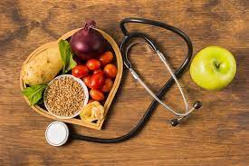

La mala alimentacion se refiere a las carencias, los excesos y los desequilibrios en la ingesta calorica y de nutrientes de una persona. Abarca 3 tipos de afecciones: *Deanutricion:Incluye la emaciacion (un peso insuficiente respecto a la talla), el retraso del crecimiento (una talla insuficiente para la edad) y la insuficiecia ponderal (un peso insuficiente para la edad). *Malnutricion relacionada con los micronutrientes (vitaminas o minerales importantes). *Sobrepeso, obesidad y enfermedades no transmisibles relacionadas con la alimentacion:Cardiopatias, diabetes, algunos canceres, entre otras. Para prevenir estas enfermedades es fundamental implementar habitos que fomenten la ingesta de alimentos sanos, la actividad fisica y otras practicas que promueven un estilo de vida saludable.
Una dieta equilibrada comienza en el momento de elegir los alimentos. Es importante evitar consumir en exceso sal, azucar y ciertas grasas (trans y saturadas), y aumentar la ingesta de fruta, verduras y fibra. Ademas, es necesario evitar un estilo de vida sedentario para reducir el riesgo de padecer enfermedades cronicas relacionadas con factores dieteticos.
Este tipo de alimentos son ricos en calorias y pueden poseer grandes cantidades de sales, azucares, grasas y conservantes quimicos, que perjudican la salud.
| Mantengase hidratado | Realice ejercicio y actividad fisica |
|---|---|
| Al beber agua a lo largo del dia el organismo se mantiene hidratado y se puede purificar de las toxinas acumuladas por la mala alimentacion. Es importante consumir agua, evitar recurrir a bebidas gaseoas, jugos pasteurizados o te envasado, que contienen grandes cantidades de azucar. | Es conveniente mantener un nivel adecuado de ejercicio y actividad fisica. Gracias a esto se gasta la energia que, de otro modo, se acumularia e el cuerpo en forma de grasa. Asi, es necesario realizar actividad fisica periodica |
| Cuide su nutricion |
|---|
| Combatir todas las formas de malnutricion es uno de los mayores problemas sanitarios a escala mundial, todos los paises del mundo estan afectados por una o mas formas de malnutricion. Las mujeres, los lactantes, los niños y los adolescentes estan particularmente expuestos a esta condicion. Por eso es necesario implementar cuanto antes buenas conductas alimentarias y eliminar las negativas para evitar enfermedades que en muchos casos son irreversibles.  |
Esta pagina fue creada con el proposito de ayudar a las personas brindando informacion sobre este tema para que no sufran perdida o aumento de peso y asi puedan tener un buen fisico y tambien para que pueden evitar enfermedades causadas por la mala alimentacion.
Pagina creada por Fernando Daza Terceros